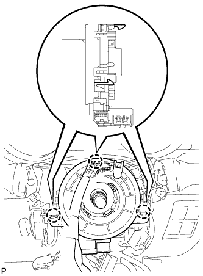
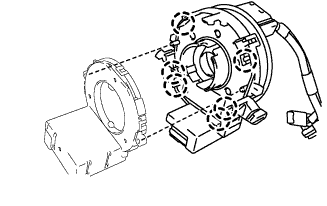

SPIRAL CABLE > REMOVAL |
| 1. DISCONNECT CABLE FROM NEGATIVE BATTERY TERMINAL |
| 2. PLACE FRONT WHEELS FACING STRAIGHT AHEAD |
| 3. REMOVE LOWER NO. 3 STEERING WHEEL COVER |
 |
Detach the 2 claws and remove the steering wheel cover.
| 4. REMOVE LOWER NO. 2 STEERING WHEEL COVER |
 |
Detach the 2 claws and remove the steering wheel cover.
| 5. REMOVE STEERING PAD |
 |
Using a T30 "TORX" socket wrench, loosen the 2 screws until the groove along the screw circumference catches on the screw case.
 |
Pull out the steering pad from the steering wheel, as shown in the illustration. Then support the steering pad with one hand.
Disconnect the horn connector.
Disconnect the 2 connectors and remove the steering pad.
| 6. REMOVE STEERING WHEEL ASSEMBLY |
 |
Remove the steering wheel set nut.
Put matchmarks on the steering wheel and main shaft.
Using SST, remove the steering wheel assembly.
| 7. REMOVE LOWER STEERING COLUMN COVER |
 |
Remove the 3 screws.
Detach the 2 claws to remove the lower steering column cover.
| 8. REMOVE UPPER STEERING COLUMN COVER |
 |
Detach the 4 clips.
Detach the claw to remove the upper steering column cover.
| 9. REMOVE SPIRAL CABLE |
 |
Disconnect the connectors from the spiral cable with steering sensor.
Detach the 3 claws and remove the spiral cable with steering sensor.
 |
Detach the 6 claws and remove the spiral cable from the steering sensor.